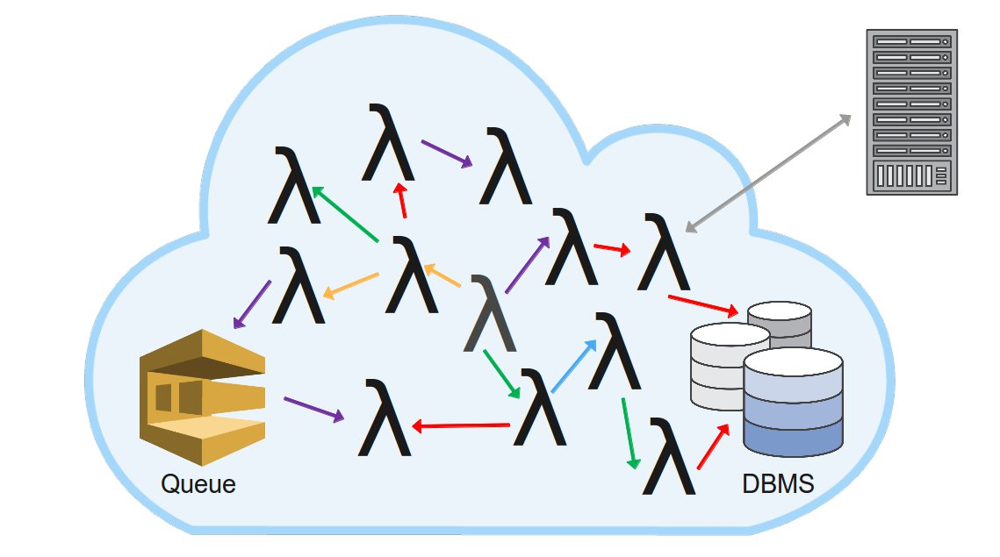

State as a Service
(still serverless...)
Melbourne Serverless Meetup - Feb 28 2017
Created by Shiva Narayanaswamy / @shivamaan
Evolution

Serverless Reference Architecture

Lambda Explosion
Apps not Functions
- Sequence Functions
- Data based decision trees
- Retry and Error Handling
- Try-Catch-Finally
- Workflows that run for hours
We need Coordination

Enter State Machines
State Machines in two minutes
 |
AWS Step Functions

Hello World
{
”Comment”: “Hello World Example",
"StartAt” : "HelloWorld”,
"States” : {
"HelloWorld” : {
"Type” : "Task",
"Resource” : "arn:aws:lambda:REGION:ACCOUNT_ID:function:FUNCTION_NAME”,
"End” : true
}
}
}
Seven state types
| Task | A single unit of work (Activity or Lambda) |
| Choice | Branching logic |
| Parallel | Fork and join data across tasks |
| Wait | Delay |
| Fail | Stops execution as a failure |
| Suceed | Stops execution as a success |
| Pass | Input to output pass through |
Poll or Push

Task State
{
”Comment”: “Hello World Example",
"StartAt” : "HelloWorld”,
"States” : {
"HelloWorld” : {
"Type” : "Task",
"Resource” : "arn:aws:lambda:REGION:ACCOUNT_ID:function:FUNCTION_NAME”,
"End” : true
}
}
}
Task State - Retry Failures
"HelloWorld": {
"Type": "Task",
…
"Retry": [
{
"ErrorEquals": ["HandledError"],
"IntervalSeconds": 1,
"MaxAttempts": 2,
"BackoffRate": 2.0
},
… ]
Task State - Catch Failures
"HelloWorld": {
"Type": "Task",
…
"Catch": [
{
"ErrorEquals": ["HandledError"],
"Next": "CustomErrorFallback"
},
{
"ErrorEquals": ["States.TaskFailed"],
"Next": "ReservedTypeFallback"
… ]
{
Task State - Catch Failures
Complex error handling and retries
"X": {
"Type": "Task",
"Resource": "arn:aws:states:us-states-1:123456789012:task:X",
"Next": "Y",
"Retry": [
{
"ErrorEquals": [ "ErrorA", "ErrorB" ],
"IntervalSeconds": 1,
"BackoffRate": 2,
"MaxAttempts": 2
},
{
"ErrorEquals": [ "ErrorC" ],
"IntervalSeconds": 5
}
],
"Catch": [
{
"ErrorEquals": [ "States.ALL" ],
"Next": "Z"
}
]
}
Choice State
"ChoiceState": {
"Type" : "Choice",
"Choices": [
{
"Variable": "$.foo",
"NumericEquals": 1,
"Next": "FirstMatchState"
},
{
"Variable": "$.foo",
"NumericEquals": 2,
… ]
Choice State

Parallel State
"LookupCustomerInfo": {
"Type": "Parallel",
"Branches": [
{
"StartAt": "LookupAddress",
"States": {
"LookupAddress": {
"Type": "Task",
"Resource":
"arn:aws:lambda:us-east-1:123456789012:function:AddressFinder",
"End": true
}
}
},
{
"StartAt": "LookupPhone",
"States": {
"LookupPhone": {
"Type": "Task",
"Resource":
"arn:aws:lambda:us-east-1:123456789012:function:PhoneFinder",
"End": true
}
}
}
],
"Next": "NextState"
},
Wait State
"wait_using_seconds": {
"Type": "Wait",
"Seconds": 10,
"Next": "wait_using_timestamp"
},
"wait_using_timestamp": {
"Type": "Wait",
"Timestamp": "2015-09-04T01:59:00Z",
"Next": "wait_using_timestamp_path"
},
Amazon States Language Spec
https://states-language.net/spec.html https://github.com/awslabs/statelintServerless Reference Architecture: Image Recognition and Processing Backend
 https://github.com/awslabs/lambda-refarch-imagerecognition
https://github.com/awslabs/lambda-refarch-imagerecognition
Manual Approvals
https://aws.amazon.com/blogs/compute/implementing-serverless-manual-approval-steps-in-aws-step-functions-and-amazon-api-gateway/Use Cases
- Asynchronous data processing (Also think AWS Batch)
- Business process workflow (FoodPanda)
- Intelligent application delivery pipelines
- Event driven workflows
- Infrastructure automation (Shell scripts)
- Building a business from a great idea - Simon Wardley
Gotchas
(Feature Requests ?!)- AWS Limits (StartExecution API has a limit of 100 and gets throttled to 2 per second)
- Cannot edit State Machines
- Task Activity is polling only (Hint : Needs SNS or HTTP endpoint to be truly asynchronous)
- Activity ARN is potentially guessable
- Event Driven State Machines
- State Machine based development, testing, operations and tooling
- Available in N.Virginia, Ohio, Oregon, Tokyo, Ireland